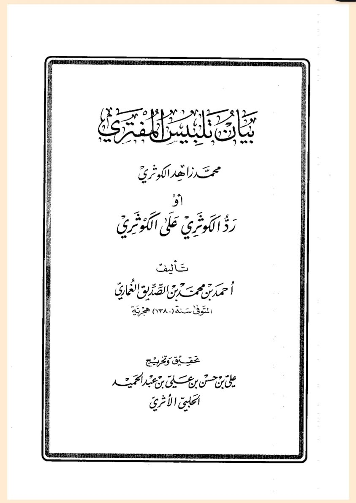

শাইখ যাহিদ আল-কাওসারি যে-সব অগণিত যায়গায় তাহকিকের নামে নিজের ডাবল স্ট্যান্ডার্ডের…
২১ জুন, ২০২৪
শাইখ যাহিদ আল-কাওসারি যে-সব অগণিত যায়গায় তাহকিকের নামে নিজের ডাবল স্ট্যান্ডার্ডের পরিচয় দিয়েছেন এবং সাহাবি ইবনু আব্বাস রা, ইমাম মালেক, আহমদ, শাফি, ইবনু হাজার রাহ. ও অন্যান্য ইমামের নামে যে নির্লজ্জ বিষোদগার করেছেন, সেগুলোর ইতিবৃত্তান্ত জানতে পড়ুন ‘বায়ানু তালবিসিল মুফতারি’।
লিখেছেন তারই যুগের বিখ্যাত হাফিজুল হাদিস শাইখ আহমদ বিন মোহাম্মদ বিন সিদ্দিক আল-গুমারি রাহ.
শাইখ যাহিদ আল-কাওসারি যে-সব অগণিত যায়গায় তাহকিকের নামে নিজের ডাবল স্ট্যান্ডার্ডের পরিচয় দিয়েছেন এবং সাহাবি ইবনু আব্বাস রা, ইমাম মালেক, আহমদ, শাফি, ইবনু হাজার রাহ. ও অন্যান্য ইমামের নামে যে নির্লজ্জ বিষোদগার করেছেন, সেগুলোর ইতিবৃত্তান্ত জানতে পড়ুন ‘বায়ানু তালবিসিল মুফতারি’।
লিখেছেন তারই যুগের বিখ্যাত হাফিজুল হাদিস শাইখ আহমদ বিন মোহাম্মদ বিন সিদ্দিক আল-গুমারি রাহ.
